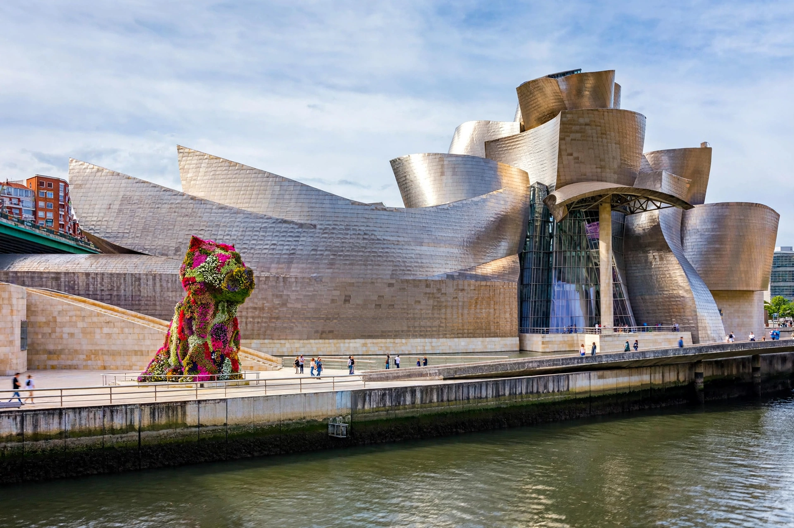

Guggenheim Museum Bilbao
From Wikipedia, the free encyclopedia

The Guggenheim Museum Bilbao: swirling titanium-clad forms beside the Nervión river, Jeff Koons's flower Puppy in the plazaThe Guggenheim Museum Bilbao is a museum of modern and contemporary art in Bilbao, Basque Country, Spain. Designed by Canadian-American architect Frank Gehry, the museum was inaugurated on 18 October 1997 by King Juan Carlos I of Spain. Built alongside the Nervión River, the museum's titanium, glass and limestone forms are one of the most admired works of contemporary architecture.
The building's success in regenerating a declining industrial city gave rise to the term 'Bilbao effect' in urban planning. Inside, a 130-metre-long gallery houses Richard Serra's monumental steel installation The Matter of Time; outside stand Koons's floral Puppy and Louise Bourgeois's spider Maman.
See also
Categories: Arts • Culture